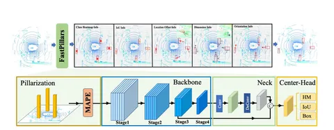

В BEV-based-детекторах часто используют sparse-свёртки. Но их не так-то просто перевести в формат, оптимизированный для инференса: развернуть, квантизировать и конвертировать в TRT.
Лидарный pillar-based-энкодер FastPillars не использует sparse-свёртки, не теряя при этом в скорости и точности. Сегодня разберём статью о том, как он устроен.
У архитектуры FastPillars четыре основных блока: MAPE, Backbone, Neck и Center-Head. Рассмотреть, как всё устроено, можно на схеме. Neck и Center-Head довольно стандартные. Бóльший интерес представляют первые два блока.
MAPE или Max-and-Attention Pillar Encoding — специальный энкодер для pillar’ов, который лучше учитывает локальную геометрию. Например, хорошо находит людей, спрятанных за объектами. А ещё обходится небольшими вычислительными мощностями и легче деплоится в embedded-приложениях.
Чтобы точнее определять объекты, MAPE, по сути, производит positional-энкодинг — рассчитывает для каждого pillar’а один feature-вектор: параллельно вычисляет два вектора и усредняет их. Один вектор получается с помощью MLP и max-энкодинга — просто max-pool по размерности количества точек. Другой вектор вычисляют так называемым аттеншн-энкодингом, который на самом деле представляет собой взвешивание фичей для точек pillar’а и их суммирование по той же размерности. В целом блок напоминает Squeeze-And-Excitation.
Для Backbone к обычному ResNet-34 авторы применили computation reallocation design: оказалось, что с бóльшим количеством слоёв начальные блоки лучше обрабатывают изображения. А для блоков ближе к концу разница не так заметна, можно оставить по одному слою. В итоге авторы увеличили количество слоёв в первых блоках и уменьшили в последних.
В Neck сфьюзили фичи из слоёв 8x и 16x как в PillarNet. Head — обычный center-based detection head. Чтобы лучше локализовывать объекты, дополнительно к типичным детекционным лоссам напрямую оптимизировали IoU-лосс.
Всего в FastPillars четыре лосса: фокальный, L1, регрессионный DIoU и отдельный для IoU.
На момент публикации, в 2023 году, FastPillars показывал SoTA-результаты на Waymo Open Dataset. Познакомиться с кодом детектора можно на GitHub авторов.
Разбор подготовил
404 driver not found
